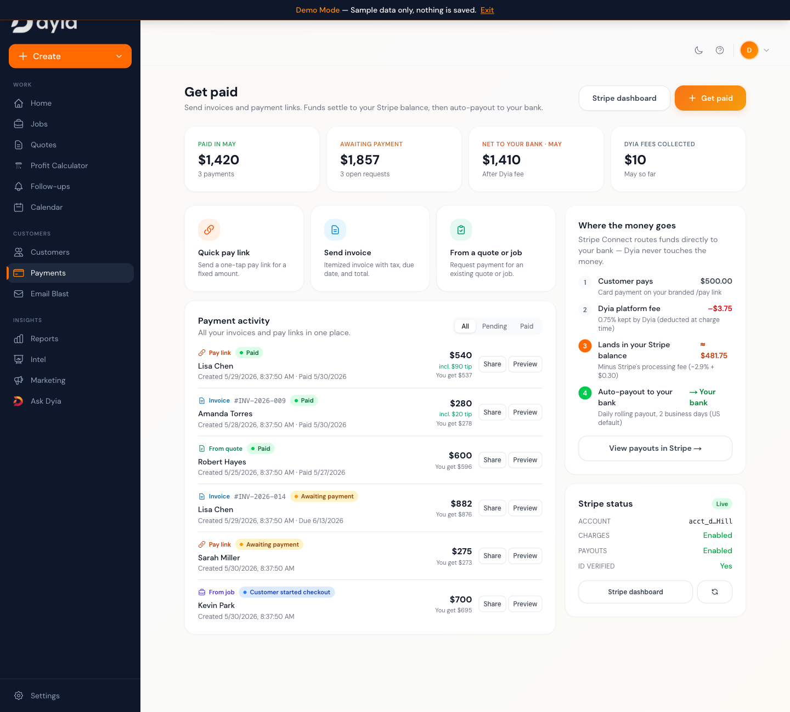

Everything shipped in one commit: Dyia Pay & tips, native subscription downgrades, full admin control, an iOS-native app UI, and a brand-new 11-page marketing site. Type-checked, linted, and visually verified on desktop and mobile.
This release bundles five workstreams into commit fb492ab
(68 added, 64 modified, 1 removed). At hand-off the working
tree is clean — everything below is committed and verified.
| Workstream | What shipped | Migration | Risk |
|---|---|---|---|
| A · Dyia Pay | Stripe Connect payments, customer tips, reconciliation, expired-session cleanup, live hub refresh, refunds | 041 | Medium |
| B · Subscriptions | Self-service + admin downgrade to Basic, cancel at period end | 040 | Medium |
| C · Admin panel | Dashboard fix, full subscription lifecycle, cross-linked surfaces, auth alignment, webhook-log fix | 042 | Low |
| D · iOS-native UI | Unified motion system, translucent safe-area tab bar, themed sheets, reduced-motion | — | Low |
| E · Marketing site | 11 pages, 8 custom graphics, emoji-free icon system, SEO metadata | — | Low |
tsc --noEmit clean · ESLint clean on changed files · all 11 marketing routes return 200 · mobile (390×844) + desktop (1440×900) visually verified · payments money-math unit test passing.
Customers can tip at Stripe checkout (100% to the merchant), and a Pro subscriber can be downgraded to Basic — by themselves at period end, or by an admin (scheduled or immediate).
Merchants collect card payments from their customers via a Stripe Connect destination charge. Dyia takes a flat 0.75% platform fee on the base amount only; money settles to the merchant's connected account.
/pay/[token] across pay links, invoices, and quote/job payments. Tips go 100% to the merchant; the fee is on the base only, the tip is a separate Stripe line item.verify route, and sync-pending. The sync-pending path previously marked paid without writing the tip, so tips under-reported when the webhook was dark. Now fixed.checkout.session.expired handler rolls an unpaid checkout_created row back to pending (still payable) and drops the dead session id, instead of leaving it stuck forever.account.updated webhook keeps the merchant's Connect flags current so the hub flips to "Live" automatically.
verify and
sync-pending are backups, not substitutes.
Three tiers gated by computeSubscriptionState(): basic (free),
trial (14-day full Pro), pro (paid). The trial is full Pro and
steps down to the chosen plan when it ends.
POST /api/stripe/subscription/cancel sets Stripe cancel_at_period_end, mirrors the flag + subscription_ends_at in the DB (migration 040); DELETE undoes it. The user keeps Pro until the period they already paid for ends./api/admin/cancel-subscription now writes cancel_at_period_end + end date optimistically on the scheduled path (previously waited on the webhook), matching the self-service route./api/admin/switch-plan does a live, prorated Stripe price swap for support cases ("downgrade me to Basic").invoice.payment_failed stamps a one-time grace window and emails the customer; cleared on recovery.Schedule a downgrade with an "undo," update the card via the Stripe portal, and see "Downgrading on <date>" without a Stripe round-trip.
Grant Pro / trial, revoke, switch plan, and cancel (scheduled or immediate) — all on the user-detail page, with the scheduled state surfaced.
Two surfaces: the in-app AdminPanel (Sidebar → "Admin Panel") and the standalone
/app/admin/* pages (dashboard, users, user detail, Dyia Pay, webhooks).
/app/admin read the whole { metrics, users } payload as metrics, so every figure was undefined and the page crashed. Now unwrapped + guarded./app/admin/layout now authorizes via is_admin or an admin/super_admin role — matching the APIs. A role-based admin is no longer bounced out of the standalone pages.042 adds the error_message column the logger actually writes, so the admin Webhooks log stops under-reporting errors.
A platform-wide polish pass so the whole product (/app) shares one motion language and feels
native on iPhone.
animate-in / fade-in / slide-in-from-* / zoom-in-95 classes used across 8+ components were previously no-ops; they now resolve consistently. Full prefers-reduced-motion support.env(safe-area-inset-bottom) (no more home-indicator overlap), with an active-tab lift and press feedback.From a single emoji-heavy landing page (no SEO, no depth) to a structured 11-page site — the page-depth pattern competitors (Jobber, Housecall Pro, ServiceTitan) use to rank and read as a serious platform.
/vs), and beta-credible proof (no invented user counts)./features hub + 4 deep feature pages, /vs/jobber & /vs/housecall-pro, and /for/{junk-removal,lawn-care,cleaning}.| Migration | Adds | Why |
|---|---|---|
040_cancel_at_period_end | dyia_users.cancel_at_period_end | Mirror Stripe's scheduled-downgrade flag for the UI. |
041_payment_tips | dyia_payments.tip_cents, allow_tip | Customer tipping; 100% to merchant, fee on base only. |
042_webhook_error_message | dyia_webhook_events.error_message | Align the table with the logger so the admin log reports errors. |
028 (Connect / dyia_payments), 036 (refunds), 037 (payment_failed_at), 039 (standalone payments / invoices).# Apply via Supabase CLI (or paste each SQL in order)
supabase db push
NEXT_PUBLIC_STRIPE_BASIC_MONTHLY_PRICE_ID, NEXT_PUBLIC_STRIPE_BASIC_ANNUAL_PRICE_ID — Basic checkout + admin downgrades set theseSTRIPE_CONNECT_COUNTRY — optional, defaults to USSTRIPE_SECRET_KEY, STRIPE_WEBHOOK_SECRET, Pro price IDs, OPENAI_API_KEY, Resend/api/stripe/webhookSubscribe the endpoint to:
checkout.session.completed · checkout.session.expired new · payment_intent.succeeded · charge.refunded · account.updatedcustomer.subscription.updated · customer.subscription.deleted · invoice.paid · invoice.payment_failednpx tsc --noEmit → clean.200 (/, /features, 4 feature pages, 2 /vs, 3 /for).claudedocs/payments-release/payments-logic.test.mts (node --experimental-strip-types).claudedocs/payments-release/qa-*.png (hub, invoice, pay link, modal, public pages — desktop + iOS).pending./app/admin/payments → confirm the quote/job returns to pending.040, 041, 042 (after confirming 028/036/037/039).checkout.session.expired).npm run build on the deploy target./, /features, /app, /pay/<token>.git revert fb492ab (single commit) or redeploy the prior build.BetaBanner.tsx (replaced by TrialBanner).dyia_payments RLS policy mismatch — mitigated by reading through a service-role server route.fb492absrc/components/marketing/{icons,sections,templates,MarketingShell,MarketingFooter}.tsx; src/app/features/* (hub + 4); src/app/vs/{jobber,housecall-pro}; src/app/for/{junk-removal,lawn-care,cleaning}; public/marketing/*.png (8).api/payments/list, api/admin/payments, api/stripe/subscription/cancel, app/admin/payments/page, lib/{payments,demo-payments,errors}.ts.040, 041, 042. Docs/QA: payments-logic.test.mts, qa-*.png..playwright-mcp/*.yml browser-session artifacts — safe to prune / gitignore.globals.css, components/app/{Sidebar,Payments,CreatePaymentRequestModal,Assistant,AdminPanel,…}.tsx, app/app/page.tsx.app/page.tsx, PublicHeader.tsx, landing/BusinessTypes.tsx.api/payments/{sync-pending,request,request/custom,public/[token]/*}, api/stripe/{webhook,checkout,verify-session,portal,connect/*}, lib/stripe.ts.app/admin/{layout,page,users/*}, api/admin/{cancel-subscription,users/[id]}, lib/{admin,subscription}.ts, hooks/useSubscription.ts, types/database.ts..gitignore, eslint.config.mjs, tsconfig.json. Removed: BetaBanner.tsx.Generated for the Dyia June 2, 2026 release. Pair with claudedocs/payments-release/ for the Dyia Pay deep-dive + QA screenshots. Full written version: claudedocs/release-2026-06-02/RELEASE_GUIDE.md.